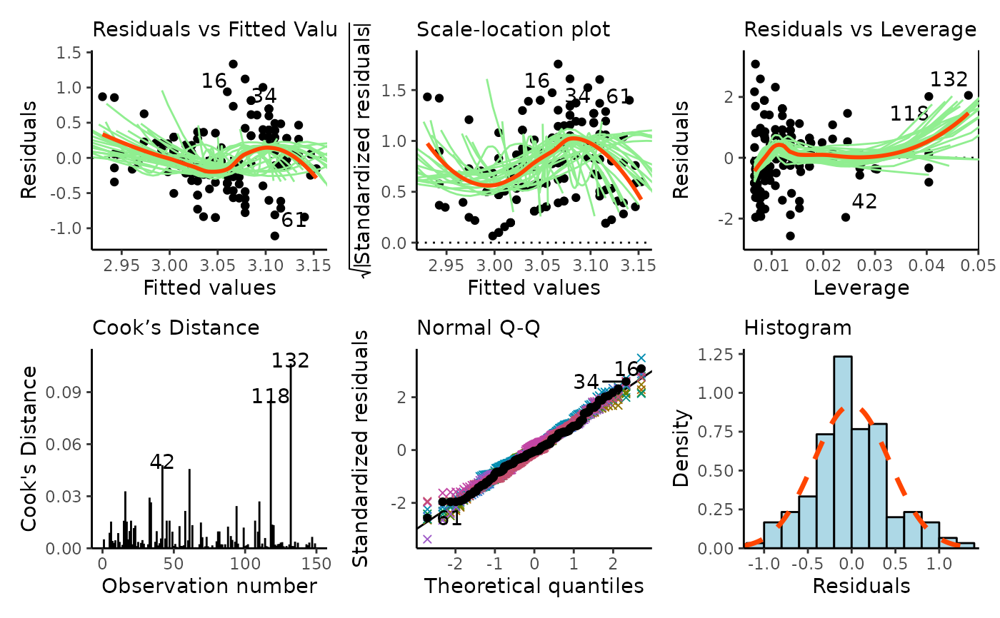
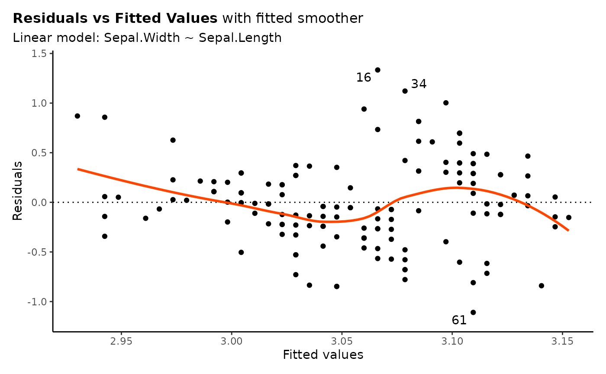

inzplot method
Diagnostic Plots for Regression Models
# S3 method for glm
inzplot(x, ..., env = parent.frame())
# S3 method for lm
inzplot(
x,
which = c("residual", "scale", "leverage", "cooks", "normal", "hist"),
show.bootstraps = nrow(x$model) < 1e+05,
label.id = 3L,
col.smooth = "orangered",
col.bs = "lightgreen",
cook.levels = c(0.5, 1),
col.cook = "pink",
...,
bs.fits = NULL,
env = parent.frame()
)a regression model
additional arguments
the environment for evaluating things (e.g., bootstraps)
the type of plot to draw
logical, if TRUE bootstrap smoothers will be shown (defaults to TRUE if fewer than 100,000 observations)
integer for the number of extreme points to label (with row id)
the colour of smoothers
the colour of bootstrap (smoothers)
levels of the Cook's distance at which to draw contours.
the colour of Cook's distance contours
a list of bootstrapped datasets
A ggplot object with a plot method that will show the plot in the graphics device
inzplot(glm): Method for GLMs
There are several plot types available:
residual versus fitted
scale-location
residual versus leverage
Cook's distance
normal Q-Q
histogram array
forest plot
iris_fit <- lm(Sepal.Width ~ Sepal.Length, data = iris)
inzplot(iris_fit)

inzplot(iris_fit, which = "residual", show.bootstraps = FALSE)
